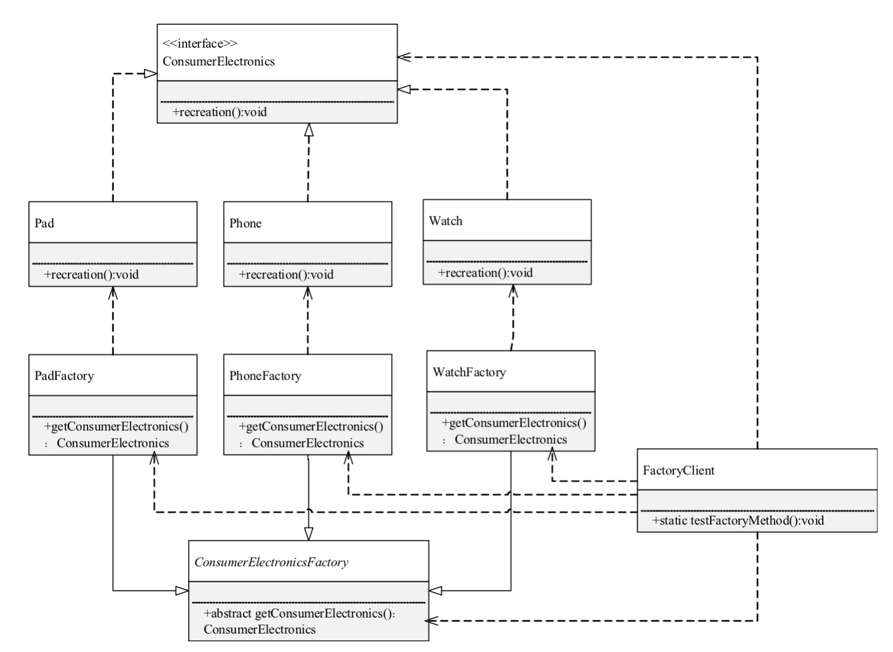
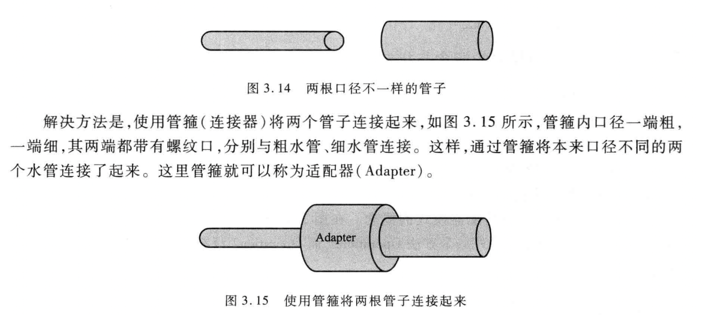
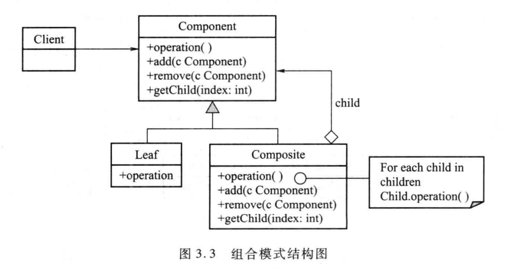
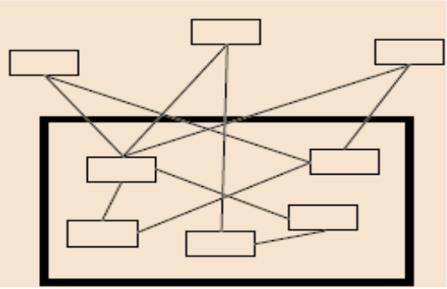
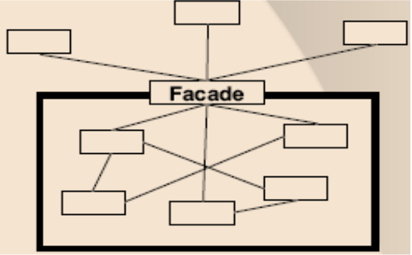
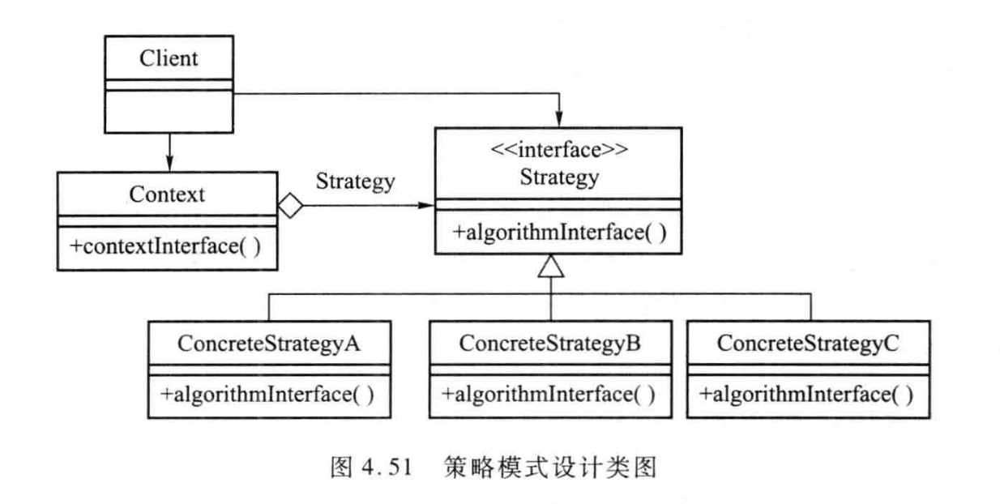

设计模式是对软件设计中普遍存在，或者说反复出现的各种问题提出的解决方案。在学校的时候我通过软件体系结构和实际上参与项目的时候也了解过一下（我觉得设计模式的知识真的是编程思想的精粹之一，非常值得深入学习）。
内容会持续更新，设计模式毕竟那么多，不可能一次全学完，暂时记录我学过的、或者使用过的
一天更新一种～最近比较忙，慢慢写，闲的时候就多更新一些
7-24 号：编写单例模式
7-25 号：外观模式
7-30 号：简单工厂模式和工厂方法模式、抽象工厂
# 设计模式原则
主要有以下几种原则
# 开闭原则
开闭原则指的是对扩展开放、对修改关闭。能够对系统的功能进行扩展，但是不修改已有的代码。
# 里氏替换原则
里氏替换原则其实是对开闭原则的补充，它要求任何基类可以发挥作用的地方，子类也可以发挥作用。
可能有点抽象，其实就是说派生类可以随时替换掉基类、且功能不被破坏，才是真的做到了继承。
# 依赖反转原则
依赖反转原则指的是高层次的模块不依赖低层次模块的实现细节。
# 接口隔离原则
简单的说就是减少耦合。
# 最小知识原则（迪米特法则）
最小知识 / 最少知道是指，一个系统的功能模块应该最大限度的不知晓其他模块的出现，减少感知。模块之间应相对独立
# 合成复用原则
尽量使用合成 / 聚合的方式，而不是使用继承
# 设计模式类型
设计模式类型主要分为以下几种：
- 创建型：包括简单工厂模式、工厂方法模式、抽象工厂模式、建造者模式、单例模式
- 结构型：适配器模式、桥模式、组合模式、装饰器模式、外观模式、享元模式、代理模式
- 行为模式：职责链模式、命令模式、迭代器模式、中介者模式、备忘录模式、观察者模式、访问者模式、策略模式、状态模式、模版方法模式、解释器模式
# 创建型
创建型的设计模式提供了更加灵活的对象创建方法，同时可以隐藏创建的具体逻辑，更强的定制性和灵活性
# 单例模式
单例模式是指，一个类（当然如果是在 JavaScript 里面的话就是指原型）仅有唯一的一个实例。
# 实现思路
- 将构造方法设置为私有的，并且提供一个公开的获取实例的方法。
- 获取实例方法内再进行判断，如果已有就返回已有对象，否则才生成。
# 例子
function SingleInstance(){ | |
let instance = null; | |
function Instance(val){ | |
this.val = val; | |
} | |
function getInstance(val){ | |
if(instance === null){ | |
instance = new Instance(val); | |
} | |
return instance; | |
} | |
return getInstance;// 利用闭包返回访问器函数 | |
} |
# 优点
- 严格控制客户程序访问唯一的实例。
- 可以简单的改成多例模式，适用于一些只允许客户创建一定数量的对象的场景。如某游戏每个账号只允许创建一个角色。
# 简单工厂模式
简单工厂模式，就是使用一个类 / 函数来专门负责创建对象。
function factory(type){ | |
// 根据 type 来创建不同的对象 | |
let obj; | |
switch(type){ | |
case'car':obj = new Car();break; | |
..... | |
} | |
return obj; | |
} |
# 核心思路
一系列不同的产品，使用一个工厂方法根据传入的类型不同创建不同的对象并返回。
# 优点
- 实行了责任分离。
- 客户不直接创建产品类的对象，只作为对象的消费者，类似于 getter 方法的好处，可以减少操作失误的可能性
- 因为客户类不负责创建对象，如果要扩展新对象，不必修改已有客户类代码
# 缺点
不符合开闭原则，每当增加产品时，必须在简单工厂方法内部增加判断逻辑。
工厂类的工厂方法是静态的，不能被继承，不能成为一个层次的类。
# 工厂方法模式
为了克服简单工厂方法的缺点（缺点第一条），改变了工厂类 / 方法的结构。
# 改进思路
简单工厂模式中，每当有一个新的产品加入时，就必须在工厂方法中增加相应的条件语句。
于是可以将工厂类改写成一个层次类来解决这个问题，如：

弄一个抽象工厂类，然后每个产品对应一个实际的工厂类（该工厂类继承抽象工厂类），创建特定产品时需要调用特定的工厂类
# 应用场景
- 创建某些类的对象逻辑比较复杂，可能存在很多判断
- 一个类不能预先知道它必须创建一个层次类中哪个子类的对象。
- 需要封装创建类的对象的逻辑。
# 优点
- 工厂方法模式符合开闭原则。增加一个新产品，不用修改已有的类代码，只需要增加一个新的产品类和对应的工厂类（继承抽象工厂）即可。
- 工厂方法模式将创建对象的逻辑和任务交给了工厂类。
# 抽象工厂模式
它和工厂方法模式不同的就在于，如果有一组相同类别的产品，抽象工厂模式也是层次类的结构，但它负责创建一组同类别的产品。
每个实工厂类生产一组相关的产品类对象
应用场景：当客户要从一个相关的产品组中创建一个对象，而没有必要知道到底创建哪个对象时，就可以用抽象工厂模式。
# 结构型
关注类和对象的组合
# 适配器模式
# 背景
当现有的系统需要使用旧系统的类功能，但是旧系统的类功能又不符合现在的需要的时候，就要使用适配器，将旧系统的接口转换为客户类需要的格式
一个经典场景就是：两根口径不一样的水管，如何连接在一起呢？

# 使用场景
- 当系统想要使用现有的类，但是现有的类不符合系统的需要。
- 需要通过一个可复用的类，使得本来接口不相容并且无关的类结合在一起时。
- 在设计时需要改变多个子类接口，作用相同但名称不同的类或方法之间进行适配时。
# 实现方式
# 类适配器模式
类适配器模式利用的是继承，有三个要素
- Target，用户所期望的接口
- Adaptee，旧接口的类
- Adapter，将 Adaptee 转化为增加了新功能的 Target 接口。
# 对象适配器模式
对象适配器模式利用的是聚合
- Target，用户所期望的接口
- Adaptee，旧接口的类
- Adapter，新接口的类，但是不继承，涉及到需要转化的地方时调用 Adaptee。
# 类适配器 or 对象适配器？
在 Java 内由于是单继承的，所以相对来说对象适配器可以把多种不同的源类都适配到同一个 Target 接口。
- 若被适配的源类 Adaptee 有大量的方法，使用类适配器模式更为合适。
# 与外观模式的区别
- 外观模式定义了新的接口，而适配器使用旧的接口
- 适配器使得两种不一致的接口协同工作，而不是产生新的接口。
- 外观模式本意是产生一个轻便的接口，适配器是把现有的接口转换一下。
- 一个外观接口可能包装了多个现有系统的对象、也可能增加了一些新功能，而适配器只是包装一个对象
- 多数情况下，外观是单实例的
# 组合模式
# 背景
一个常见的背景就是我们可能经常遇到树形结构。处理树形结构的时候，如果要区分叶子结点和普通结点的操作会变得比较复杂，为了简化操作，我们可以一致的对待这些结点。
# 思路

组合模式又叫部分 —— 整体模式，模糊简单元素和复杂元素，在上面的 UML 图中，客户只需操作 Component，无需关心他是个叶子还是普通结点。
# 优点
- 定义了包含基本对象和组合对象的类层次结构，基本对象可以被组合、组合对象也可以被组合。
- 简化了客户代码，客户可以一致的使用组合结构和单个对象，而不管他是简单还是组合的。
- 设计更通用。
# 装饰器模式
装饰器模式允许向一个现有的对象添加新的功能，同时不改变它的内部结构。其实就是对现有的类的包装。
# 应用场景
当我们想要给一个对象额外的添加职责、功能的时候，就可以使用这个设计模式。
# 优点
一般来说，为了扩展一个类的功能（且不修改源代码）我们常常会使用继承的方式来实现。随着功能的增多，子类会变得越来越 “臃肿 “，而使用装饰器模式的话，能够更加灵活的分配职责。
而且很多情况下，装饰类和被装饰类是独立的，不会相互耦合，可以替代继承。
# 实现
前端中广泛应用装饰器模式的地方莫过于 React 的高阶组件（HOC）。
高阶组件是干什么用的就不再赘述了，之前的笔记也说过。
高阶组件可以提取组件中常用的行为逻辑（如从数据源获取数据）、或者添加一些方法等。
function withSubscription(WrappedComponent, selectData) {
// ...并返回另一个组件...
return class extends React.Component {
constructor(props) {
super(props);
this.handleChange = this.handleChange.bind(this);
this.state = {
data: selectData(DataSource, props)
};
}
componentDidMount() {
// ...负责订阅相关的操作...
DataSource.addChangeListener(this.handleChange);
}
componentWillUnmount() {
DataSource.removeChangeListener(this.handleChange);
}
handleChange() {
this.setState({
data: selectData(DataSource, this.props)
});
}
render() {
// ... 并使用新数据渲染被包装的组件!
// 请注意，我们可能还会传递其他属性
return <WrappedComponent data={this.state.data} {...this.props} />;
}
};
}
就像这里，在原有的基础上增强了 Wrapped Component，又不改变内部结构。而且也还可以增加方法。
# 外观模式
现有系统的接口比较复杂，希望利用原有的功能重新定义新的接口。


# 应用场景
比如说，有一家店的客户，他通过目录下订单，就像一个外观模式。客户只需要联系客服，就可以完成下订单、检查仓储、发货等一系列流程。
# 优点
外观模式产生了一个新的、轻便的接口，它可能包装了多个接口和对象，可以简化复杂系统的使用。
# 行为型
聚焦于对象和类之间的通信，大型应用必不可少的部分
# 观察者模式（发布订阅模式）
观察者模式，又叫发布订阅模式，是前端中一个非常重要的概念，响应式框架中就利用了这个模式。
# 思路
用于定义对象间的一对多的依赖关系，当一个对象发生变化并对外发布消息时，所有依赖它的对象都将得到通知并进行更新。
# 简单实现
class Notify{ | |
constructor(){ | |
this.subscribers = []; | |
} | |
add(handler){ | |
this.subscribers.push(handler); | |
} | |
emit(){ | |
this.subscribers.forEach(subscriber => subscriber()) | |
} | |
} | |
let notify = new Notify(); | |
notify.add(() => { | |
console.log('emit here'); | |
}) | |
notify.emit(); | |
//emit here |
# 策略模式
# 设计思想
根据语境的不同，使用不同的算法。就是将对算法的选择和算法的实现相分离开来

# 应用场景
将一组相关的算法封装，把实现隐藏起来，灵活扩展。
我觉得 React 中的 render props 模式也有点策略模式的思想，render props 将数据的获取和渲染职责相分离，可以灵活替换、扩展渲染的组件